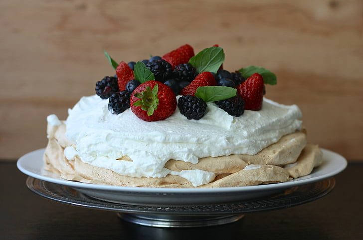

Pavlova

Ingredients
- 6 egg whites
- 350g caster sugar
- 1/2 juiced lemon
- 1/2 lemon
- 2 tsp. cornflour
- 1 tsp. vanilla extract
- Toppings to put on top (see step 9)
Instructions
Time to prepare: 30 minutes
Time to cook: 1 hour 15 minutes
Time to cool: at least 2 hours
- Step 1: Preheat the oven to 130°C (110°C fan).
- Step 2: Take a large baking sheet with baking parchment, put a round cake tin or plate on top and draw a circle around it on the parchment. Flip it over.
- Step 3: Rub the half of the lemon (non-juiced) around the inside of a large bowl. Add in the egg whites and whisk at low speed for about 1-2 minutes, until the egg whites form foamy bubbles. Keep going until the mix looks like a shaving foam.
- Step 4: Add the sugar, one tablespoon at a time, and keep whisking until the mixture is thick. Rub the mixture between your fingers - if you can feel the sugar grains, keep going.
- Step 5: Add the cornflour, lemon juice, and vanilla extract, then whisk for another 30 seconds.
- Step 6: Spoon the meringue mixture onto the baking parchment. Put it onto the centre of the circle and spread it to the edges with a palette knife. Smooth the top of the mixture.
- Step 7: Put it in the oven and bake for 15 minutes. Then turn down the heat to 100°C (80°C fan) and let it bake for another hour.
- Step 8: Turn off the oven and let the pavlova cool inside it for at least 2 hours or overnight.
- Step 9: Invert the pavlova and peel away the parchment. Ignore possible cracks, as they will be covered by the toppings.
- Step 10: Put some toppings on top of the pavlova. Possible toppings: berries; watermelon, lime, and mint; banana, tahini, and salted caramel; cherry, almond, and vanilla custard.
Enjoy your Pavlova.